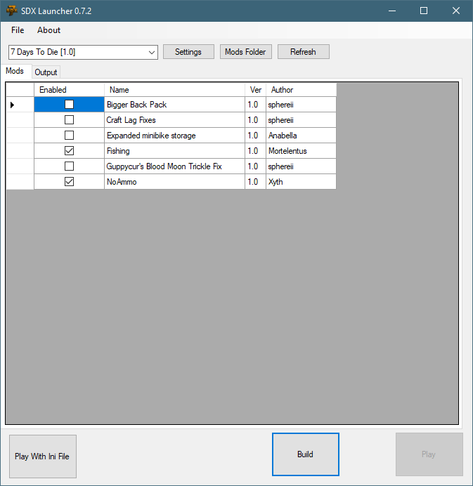

Let's see what we can do with the tool chain, and War of the Walkers.
What you'll need:
1) The 7D2D Mod Launcher
2) The SDXModding Kit
3) The SDX Mod Helper Program
Install War of the Walkers, using the 7D2D Mod Launcher
Enter the game once, in order for the Mod Launcher to install the files correctly.
After that, exit the game, and exit the Mod Launcher.
Before you begin the next step, close the SDX Launcher, if you have it open.
Start the SDX Mod Helper.
Click on the by the Game Directory, and pick the War of the Walker's Mod
If you've previously ran SDX Launcher, then it would have created a back up file. Since we are using a new mod, we'll want to remove the old back up.
When you change the Game Dir, it'll prompt you to remove your old Back up. The SDX Launcher keeps a lock on the Back up folder, which is why we closed it at the start of this tutorial.
What's in the Backup? When SDX Launcher runs initially, it makes a back up of the original DLL and the original XML. However, when you change your Game Dir, you'll want to create a new back up, rather than use the old one.
Click on Clear Back up to remove it.
The next step we want to take, is to do a health check on the Mod. Click on the Prepare Mod button.
Here, you'll find a few options that attempt to scan and check for problems that SDX may have with the mod.
In the above example, we are just going to check Remvoe Duplicates From Localizations, and Fix any Malformed Localiations.
Remove Duplicates From Localizations: This will scan for duplicate lines in the localization, and removes them.
Fix any Malformed Localization Issue This checks to see if each line of the localization files has the right amount of fields. It will fix some of those issues, such as padding in missing commas. For other issues, you'll need to manually fix them.
Click on Apply Fixes.
Great! We fixed a few issues detected. You can close the Prepare Mod window now.
Click on the Mod Downloader in the SDX Mod Helper.
War of the Walkers is a great mod. Let's see if we can extend it just a bit using SDX.
In this example, we are going to add in:
Place a checkmark in each box, and click on the Download button. It'll download the mods into your SDX Folder.
For each Mod being downloaded, you'll see a black pop box:
This is normal, and you'll see a pop up for each mod, as it downloads.
After that's complete, you can start the SDX Launcher.

In the SDX Launcher, you'll see the new Mods that you downloaded. You may have more than what's listed above, and that's okay. We'll only enable the ones we want.
Click on the Settings folder, and change the Game Dir to point to the War of the Walkers Mod:
And click on Save
Enabled the Mods we downloaded. If you have extra mods, be sure to uncheck them.
Then, click on Build.
Created with the Personal Edition of HelpNDoc: Create HTML Help, DOC, PDF and print manuals from 1 single source